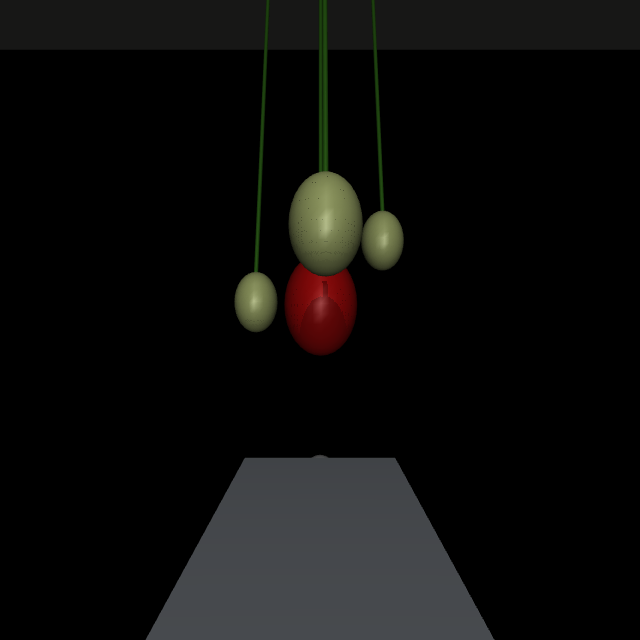

The field log
One shift of harvester-01 in gutter row G3. Every attempt writes a line and keeps the RGB-D image its camera took just before picking. Nine are ordinary; one is not.
Incident · selected
Earlier versions of this demo logged this outcome as stem_torn.
It was renamed to collision: the cutter hits the unripe berry and the robot stops
at its force limit before reaching the stem.
The image, as a simulation
The berries are found in the image, placed in 3D from the depth, and put in front of a simulated 6-axis arm.

The failure, reproduced with the current code
Every logged attempt is rebuilt the same way and run with the robot's controller as it is. The simulation should end each one the way the field did.
The prompt, and the agent's answer
An AI agent was given the field report, a copy of the code, and one command that reruns every logged attempt in the simulator. It was allowed to change only the robot's controller. Below are the prompt it got and the answer it gave, word for word.
The prompt
The agent's answer
The fix, in the code
The change the agent made to robot_controller.py, and the failed attempt run again with it.
What it changed
What the agent said while it worked
The failed attempt, before and after
Every attempt, rerun with the fix
A fix for one awkward cluster must not break the nine ordinary picks.
Pull request, sent for review
The change goes out as a pull request, and a reviewer is asked to look at it. Nothing was pushed anywhere for this demo.